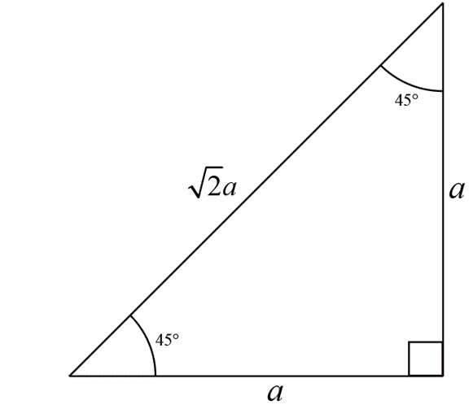

Right Triangle Trigonometry
{kind=link}
The right angle trigonometry originates from similarity of triangles.
In the above figure \( \triangle OA_1B_1 \sim \triangle OA_2B_2 \) because \( \angle A_1OB_1 = \angle A_2OB_2 = \theta \)
\( \Rightarrow \) their corresponding sides are proportional
We can conclude from proportionality of sides that
\( \frac{A_1B_1}{OB_1} = \frac{A_2B_2}{OB_2} \quad ....(1) \)
\( \frac{OA_1}{OB_1} = \frac{OA_2}{OB_2} \quad ....(2) \)
And
\( \frac{A_1B_1}{OA_1} = \frac{A_2B_2}{OA_2} \quad ....(3) \)
Let us consider another triangle \( \triangle OAB \) which is similar to \( \triangle OA_1B_1 \) and \( \triangle OA_2B_2 \)
{kind=link}
The trigonometric ratios are defined based on the principles of similar triangles. When triangles are similar, their corresponding angles are equal, and their corresponding sides are in proportion. For any right-angled triangle, if we take the angle \( \theta \) as one of the non-right angles, the side opposite to \( \theta \) is called the perpendicular, the side adjacent to \( \theta \) is called the base, and the longest side, opposite the right angle, is called the hypotenuse.
Because the triangles \( \triangle OA_1B_1 \), \( \triangle OA_2B_2 \), and \( \triangle OAB \) are similar (as they share the same angle \( \theta \)), the ratios of their corresponding sides are equal and constant for a given angle \( \theta \), regardless of the size of the triangle. This constancy allows us to define the following trigonometric ratios:
-
Sine of angle \( \theta \), written as \( \sin\theta \), is the ratio of the perpendicular to hypotenuse.
\( \sin\theta = \frac{\text{perpendicular}}{\text{hypotenuse}} \)
-
Cosine of angle \( \theta \), written as \( \cos\theta \), is the ratio of the base to hypotenuse.
\( \cos\theta = \frac{\text{base}}{\text{hypotenuse}} \)
-
Tangent of angle \( \theta \), written as \( \tan\theta \), is the ratio of the perpendicular to base.
\( \tan\theta = \frac{\text{perpendicular}}{\text{base}} \)
-
Cosecant of angle \( \theta \), written as \( \csc\theta \), is the reciprocal of \( \sin\theta \),
\( \csc\theta = \frac{1}{\sin\theta} \quad \Rightarrow \quad \csc\theta = \frac{\text{hypotenuse}}{\text{perpendicular}} \)
-
Secant of angle \( \theta \), written as \( \sec\theta \), is the reciprocal of \( \cos\theta \),
\( \sec\theta = \frac{1}{\cos\theta} \quad \Rightarrow \quad \sec\theta = \frac{\text{hypotenuse}}{\text{base}} \)
-
Cotangent of angle \( \theta \), written as \( \cot\theta \), is the reciprocal of \( \tan\theta \),
\( \cot\theta = \frac{1}{\tan\theta} \quad \Rightarrow \quad \cot\theta = \frac{\text{base}}{\text{perpendicular}} \)
Conclusion
For a given angle \( \theta \) in a right-angled triangle, the trigonometric ratios (sine, cosine, tangent, cosecant, secant, and cotangent) remain constant regardless of the size of the triangle. Now we know that this is due to the principle of similar triangles. When two right-angled triangles have the same acute angle \( \theta \), they are similar, which means their corresponding sides are proportional.
This proportionality is the basis for trigonometric ratios. For instance, if you double the lengths of all sides of a right-angled triangle, the ratios of the lengths of the sides (perpendicular to base, base to hypotenuse, perpendicular to hypotenuse) do not change. Hence, the values of \( \sin\theta \), \( \cos\theta \), \( \tan\theta \), \( \csc\theta \), \( \sec\theta \), and \( \cot\theta \) are invariant.
Moreover, because these ratios are constant for a given angle, they are often tabulated or encoded into scientific calculators and computer functions, allowing for quick and accurate computation of trigonometric values in practical applications. This constancy also implies that we can talk about the sine, cosine, or tangent of an angle without referring to a specific triangle.
Finding the value of Trigonometric Ratios
Well from a naïve point of view, one would find out values of trigonometric ratios of any angle by actually drawing a right-angled triangle with that angle. Measure the side lengths with a scale and calculate all six ratios.
For example, suppose you want to know the values of trigonometric ratios for the angle 40°.
{kind=link}
Let us draw a right-angled triangle with one angle 40°. I have drawn this on a software called “Adobe Illustrator” where lengths are in some unit (actually the unit is point. So the hypotenuse is 400 points) I measured that the perpendicular length is 257.3 points and base is 306.8 points.
So, sin 40° = \(\frac{257.3}{400} = 0.643\), cos 40° = \(\frac{306.8}{400} = 0.767\) and tan 40° = \(\frac{257.3}{306.8} = 0.839\)
Draw your own triangle using a scale and protractor and you should get very similar results.
Actually, all values that I calculated are very near to actual values. We have errors in our result because we had errors in measurement.
Similarly, we can calculate sin(1°), sin(2°), sin(3°), ..., sin(90°) by repeatedly drawing an actual right-angled triangle for correspoding angles. Even though we do not actually do so. As we learn about trigonometry further, we shall see that we have formulas which can calculate these values directly to a great accuracy! We need not calculate these values using formulas as we can always use trigonometric tables (precalculated values presented as tables) or a calculator if you are allowed to do so.
An Application of what you did above
The question arises, where are you actually going to use these values. One example would be enough to understand the significance of what you did.
Suppose there is a building whose height you want to measure. You can use take a measuring tape and measure the height of the building directly. Too dangerous!
You go outside the building. Measure two things. Firstly measure the angle that the top of the building from the horizontal. Secondly, measure that the distance of the base of the building from you(which is not dangerous too!).
{kind=link}
Triangle OAB is a right-angled triangle.
tan 63° = \(\frac{\text{perpendicular}}{\text{base}} = \frac{h}{20} \) ⇒ \( h = 20 \tan 63° \)
Using your calculator or some trigonometric table you can find how much is tan 63°
tan 63° = 1.9626
Thus, \( h = 20 \times 1.9626 = 39.252 \)
But since you measured this from your eye level, the
actual height of the building is \( 39.252 + 1.8 = 41.052 \) m
So the height of the building is roughly 41 m.
This is not the only use of trigonometry and not even the complicated one. If apocalypse happens and everything is destroyed and you are left with a responsibility to start the civilization again, trigonometry may be useful. You can measure the height of mountains, measure the width of rivers or may be measure the distance of Moon from Earth.
Values of trigonometric ratios for some special angles
Values of certain trigonometric functions can be found using geometry. You can find them easily using compound angles, multiple angle identities. Then, why know this?
Let us start with the simplest ones.
30° and 60°
Using an equilateral triangle one can easily find out the values of trigonometric functions of these angles.
Draw an equilateral triangle \( ABC \) having side lengths equal to \( 2a \) (why \( 2a \)? Why not just \( a \)? You can appreciate if you try both ways. We are assuming \( 2a \) just to avoid fractions. This kind of thing you do at many places in mathematics.)
All angles in this triangle are equal to 60°. Draw a line perpendicular to \( BC \) from the vertex \( A \). Let the foot of this perpendicular be \( N \).
It can easily be proven that \( AN \) bisects the angle \( CAB \) and also bisects the side \( BC \).
Clearly, \( BN = NC = a \).
{kind=link}
Observe that in the right-angled triangle \( \triangle ANB \), \( \angle BAN = 30^\circ \). By Pythagoras theorem,
\( AB^2 = AN^2 + BN^2 \) i.e. \( AN^2 = 4a^2 - a^2 = 3a^2 \)
\( \Rightarrow AN = \sqrt{3}a \)
Keep in mind, in \( \triangle ANB \), with respect to \( 30^\circ \), \( BN \) is the perpendicular, \( AN \) is the base and \( AB \) is obviously the hypotenuse.
Whereas with respect to \( 60^\circ \) \( AN \) is the perpendicular, \( BN \) is the base and \( AB \) is obviously the hypotenuse.
In \( \triangle ANB \),
45°
Draw a right-angled isosceles triangle – triangle with one angle 90° and the other two angles are equal to 45°. 
{kind=link}
If the length of equal sides of the triangle are equal to \( a \), then the length of the hypotenuse by Pythagoras theorem is \( \sqrt{2a} \).
15° and 75°
Method 1: Draw an equilateral triangle \( ABC \) of side length \( 2a \). Drop a perpendicular \( AN \) to side \( BC \) from vertex \( A \). Since it is an equilateral triangle, \( N \) is the midpoint of \( BC \).
{kind=link}
Now draw the angle bisector \( AM \) of \( \angle BAN \) which cuts \( BC \) at \( M \). Thus, \( \angle MAN = 15^\circ \).
Since, \( \triangle MAN \) is a right angled triangle and its angles are \( 15^\circ \) and \( 75^\circ \) we can find all trigonometric values for \( 15^\circ \) and \( 75^\circ \), if we know lengths of its sides \( AM \), \( MN \) and \( AN \)
\( AN \) is the easiest to find out.
In \( \triangle ABN \),
By Pythagoras theorem,
\( AN^2 = AB^2 - BN^2 = 4a^2 - a^2 = 3a^2 \)
\( \Rightarrow AN = \sqrt{3}a \)
Now, we will find out \( MN \).
Since \( AM \) is the angle bisector of angle \( \angle BAN \) in \( \triangle ABN \), by angle bisector theorem \( AM \) divides \( BN \) in the ratio \( AB:AN \), that is,
\( \frac{BM}{MN} = \frac{AB}{AN} = \frac{2a}{\sqrt{3}a} = \frac{2}{\sqrt{3}} \quad ...(1) \)
\( \Rightarrow 2MN = \sqrt{3}BM \)
\( \Rightarrow 2MN = \sqrt{3} (BN - MN) \)
\( \Rightarrow (2 + \sqrt{3}) MN = \sqrt{3}BN \)
\( \Rightarrow MN = \frac{\sqrt{3}a}{2 + \sqrt{3}} \)
\( \Rightarrow MN = \sqrt{3}(2 - \sqrt{3})a \quad \text{[Rationalizing the denominator]} \)
Lastly we find out \( AM \) using Pythagoras theorem in \( \triangle AMN \),
\( AM^2 = AN^2 + MN^2 \)
\( = 3a^2 + (2 - \sqrt{3})^2 a^2 = 3a^2 (8 - 4\sqrt{3}) \)
\( AM^2 = 6a^2 (4 - 2\sqrt{3}) \)
\( = 6a^2 \left( \sqrt{3} - 1 \right)^2 \)
\( AM = \sqrt{6a} \left( \sqrt{3} - 1 \right) \)
Finally
\( \sin 15^\circ = \frac{MN}{AM} = \frac{\sqrt{3}(2 - \sqrt{3})a}{\sqrt{6}(\sqrt{3} - 1)a} \)
\( = \frac{4 - 2\sqrt{3}}{2\sqrt{2}(\sqrt{3} - 1)} = \frac{(\sqrt{3} - 1)^2}{2\sqrt{2}(\sqrt{3} - 1)} = \frac{\sqrt{3} - 1}{2\sqrt{2}} \)
\( \cos 15^\circ = \frac{AN}{AM} = \frac{\sqrt{3}a}{\sqrt{6a}(\sqrt{3} - 1)} = \frac{\sqrt{3} + 1}{2\sqrt{2}} \)
\( \tan 15^\circ = \frac{MN}{AN} = \frac{\sqrt{3}(2 - \sqrt{3})a}{\sqrt{3}a} = 2 - \sqrt{3} \)
Similarly, we can see that angle \( \angle AMN = 75^\circ \) in \( \triangle AMN \). Thus,
\( \sin 75^\circ = \frac{\sqrt{3} + 1}{2\sqrt{2}}, \quad \cos 75^\circ = \frac{\sqrt{3} - 1}{2\sqrt{2}}, \quad \text{and} \quad \tan 75^\circ = 2 + \sqrt{3} \)
Method 2
{kind=link}
Certainly, here is the corrected text with proper formatting:
Draw an isosceles right-angled triangle \( \triangle ABC \) right-angled at \( B \). Let \( AB = BC = a \).
\( \Rightarrow AC = \sqrt{2}a \quad \text{[Using Pythagoras theorem]} \)
Draw \( AD \) such that \( \angle BAD = 30^\circ \). Drop a perpendicular \( DE \) from \( D \) to \( AC \). \( EC = CD \) because \( \triangle ECD \) is a right-angled isosceles triangle.
In \( \triangle ABD \),
\( \tan 30^\circ = \frac{BD}{AB} \Rightarrow BD = \frac{a}{\sqrt{3}}. \)
\( \Rightarrow CD = BC - BD = a - \frac{a}{\sqrt{3}} = \left( \sqrt{3} - 1 \right) \frac{a}{\sqrt{3}} \)
In \( \triangle ECD \),
\( \cos 45^\circ = \frac{EC}{CD} \Rightarrow EC = CD \cdot \cos 45^\circ \)
\( \Rightarrow EC = \left( \sqrt{3} - 1 \right) \frac{a}{\sqrt{3}} \cdot \frac{1}{\sqrt{2}} = \left( \sqrt{3} - 1 \right) \frac{a}{\sqrt{6}} \)
In \(\triangle AED \), angle \( \angle EAD = 15^\circ \) and it is a right-angled triangle. We now only need to calculate \( AE \), \( AD \) and \( ED \).
\( ED = EC = \left( \sqrt{3} - 1 \right) \frac{a}{\sqrt{6}} \)
In \( \triangle ABD \), \( \cos 30^\circ = \frac{AB}{AD} \Rightarrow AD = \frac{AB}{\cos 30^\circ} \)
\( \Rightarrow AD = \frac{a}{\sqrt{3}} = \frac{2a}{\sqrt{3}} \cdot \frac{1}{2} \)
In \( AE = AC - EC = \sqrt{2a} - \left( \sqrt{3} - 1 \right) \frac{a}{\sqrt{6}} = \left( \sqrt{3} + 1 \right) \frac{a}{\sqrt{6}} \)
Thus, finally,
\( \sin 15^\circ = \frac{ED}{AD} = \left( \sqrt{3} - 1 \right) \frac{a}{\sqrt{6}} \times \frac{\sqrt{3}}{2a} = \left( \sqrt{3} - 1 \right) \frac{1}{2\sqrt{2}} \)
Method 3
{kind=link}
Draw a circle of radius 1 unit. Let \( AB \) be the diameter with \( O \) as the centre. Draw \( AC \) such that \( \angle BAC = 15^\circ \) and \( C \) lies on the circle. The angle subtended by \( BC \) at \( A \) is \( 15^\circ \), then the angle subtended by \( BC \) at the centre \( O \) is twice of it, that is, \( 30^\circ \). Drop a perpendicular from \( C \) to diameter \( AB \), \( N \) being its foot on \( AB \).
In \( \triangle OCN \), \( OC = 1 \) (radius), \( CN = \sin 30^\circ \) and \( ON = \cos 30^\circ \)
\( \triangle MNC \) is a right-angled triangle with \( \angle NAC = 15^\circ \). If we wish to find out the values of trigonometric ratios we need to know the lengths of its sides, that is, \( AC \), \( AN \) and \( CN \).
\( CN = \sin 30^\circ = \frac{1}{2} \)
And \( AN = 1 + \cos 30^\circ \)
\( AC^2 = AN^2 + CN^2 = (1 + \cos 30^\circ)^2 + \sin^2 30^\circ = 2 + 2 \cos 30^\circ \)
\( \Rightarrow AC = \sqrt{2 + \sqrt{3}} = \sqrt{\frac{4 + 2\sqrt{3}}{2}} = \sqrt{\frac{\left(\sqrt{3} + 1\right)^2}{2}} = \frac{\sqrt{3} + 1}{\sqrt{2}} \)
Therefore,
\( \sin 15^\circ = \frac{CN}{AC} \)\(= \frac{\sin 30^\circ}{\sqrt{2 + \sqrt{3}}} \)\(= \frac{\frac{\sqrt{2}}{2}}{\frac{\sqrt{3} + 1}{\sqrt{2}}} = \frac{\sqrt{3} - 1}{2\sqrt{2}} \)
\( \cos 15^\circ = \frac{AN}{AC} = \frac{1 + \cos 30^\circ}{\sqrt{2 + \sqrt{3}}} = \frac{2 + \sqrt{3}}{\sqrt{2}(\sqrt{3} + 1)} = \frac{\sqrt{3} + 1}{2\sqrt{2}} \)
18°
Calculating sin 18°
{kind=link}
Let there be a regular pentagon \( ABCDE \) having side lengths equal to \( a \) and centre \( O \).
Construct some extra stuff as shown in the figure. A little angle hunting will show that \( \angle NAC = 18^\circ \).
Now \( CN = \frac{CD}{2} = \frac{a}{2} \)
\( \angle CBL = \angle MED = 18^\circ \)
\( LC = BC \sin 18^\circ = a \sin 18^\circ \) and \( DM = a \sin 18^\circ \)
\( AC + BE = LM = LC + CD + DM \)
\( AC = a \sin 18^\circ + a + a \sin 18^\circ \Rightarrow AC = a + 2a \sin 18^\circ \)
In \( \triangle NAC \), \( \sin 18^\circ = \frac{CN}{AC} = \frac{\frac{a}{2}}{a + 2a \sin 18^\circ} \)
\( \Rightarrow \sin 18^\circ = \frac{1}{2 + 4 \sin 18^\circ} \)
\( \Rightarrow 4 \sin^2 18^\circ + 2 \sin 18^\circ - 1 = 0 \)
\( \Rightarrow \sin 18^\circ = \frac{-2 + \sqrt{4 + 16}}{8} = \frac{-1 + \sqrt{5}}{4} \)
\( \Rightarrow \sin 18^\circ = \frac{\sqrt{5} - 1}{4} \quad (\sin 18^\circ \text{ cannot be negative value}) \)
36°
{kind=link}
Construct a regular pentagon \(ABCDE\) as shown above.
\(\triangle ECB \cong \triangle FCB \Rightarrow \frac{x+y}{x} = \frac{x}{y} \Rightarrow xy + y^2 = x^2 \quad ...(1)\)
In \(\triangle BCF\),
\(cos 36^\circ = \frac{x^2 + x^2 - y^2}{2x^2} \quad \text{[Using Cosine Rule]}\)
\( \Rightarrow \cos 36^\circ = \frac{x^2 + xy}{2(xy + y^2)} \quad \text{[Using (1)]}\)
\( \Rightarrow \cos 36^\circ = \frac{x(x+y)}{2y(x+y)} = \frac{x}{2y} \)
In \(\triangle BFE\),
\( 2x\cos 36^\circ = x + y \quad ...(2)\)
From (1) and (2),
\( 2\cos 36^\circ = 1 + \frac{1}{2\cos 36^\circ} \)
\( \Rightarrow 4\cos^2 36^\circ = 2\cos 36^\circ + 1 \)
\( \Rightarrow 4\cos^2 36^\circ - 2\cos 36^\circ - 1 = 0 \)
\( \Rightarrow \cos 36^\circ = \frac{2 + \sqrt{4 + 16}}{8} \)
\( \Rightarrow \cos 36^\circ = \frac{\sqrt{5} + 1}{4} \quad (\cos 36^\circ \text{ cannot be negative}) \)
By the way, \( \triangle BEC \) is called the Golden Triangle. But more on that later, at some place, somewhere else.
22.5°
{kind=link}
\( \triangle ABD \cong \triangle AED \)
\( \Rightarrow AE = AB = x \)
Thus, \( EC = AC - AE = \sqrt{2}x - x = (\sqrt{2} - 1)x \)
\( \triangle CED \) is an isosceles right-angled triangle
\( CE = ED = (\sqrt{2} - 1)x \)
\( \tan 22.5^\circ = \frac{ED}{AE} = \frac{(\sqrt{2} - 1)x}{x} = \sqrt{2} - 1 \)
We can easily find \( \sin 22.5^\circ \) and \( \cos 22.5^\circ \)
So I in this section tried to introduce you about various techniques used in geometry to find values of various trigonometric ratios. What we discussed is not the whole thing. You may come up with various other techniques.
I think you must be convinced that for certain angles we can find the values of trigonometric ratios using geometry. But this may not be possible for all angles or it may be a very complicated process.
Father of Trigonometry
The title "Father of Trigonometry" can be attributed to Hipparchus of Nicaea, an ancient Greek astronomer and mathematician. He is known for creating the first trigonometric table in the 2nd century BCE. Hipparchus developed a way to solve problems in astronomy that required accurate geometric calculations, and his work laid the foundation for the field of trigonometry.
Hipparchus's trigonometric table was based on the concept of a chord, which is a line segment connecting two points on a circle. By systematically calculating the lengths of chords for a series of angles, he effectively created a table that could be used to determine the angle subtended by a chord of a given length. This was an early form of what we now consider the sine function, although he did not use the modern sine function itself.
His work on compiling these values into a table was revolutionary because it allowed for more precise astronomical predictions and calculations. It's believed that he used a base circle (a circle with a fixed radius) and then calculated the chord lengths for various angles by constructing and measuring geometric figures within the circle.
The method for these calculations was based on dividing the circle into 360 degrees and then constructing a table that gave the length of the chord subtending the various angles from the center of the circle. These lengths could then be related to modern trigonometric functions. His work was further developed by later mathematicians like Claudius Ptolemy, who expanded upon Hipparchus's chords with his own works in trigonometry.
Complementary Angles
Two angles are said to be complementary angles if and only if their sum is 90°.
For any angle \( \theta \), the complement is \( 90^\circ - \theta \).
In a right-angled triangle, one of the angles is 90° and the other two are complementary.
{kind=link}
The perpendicular with respect to \( \theta \) is the base with respect to \( 90^\circ - \theta \) and the base with respect to \( \theta \) is the perpendicular with respect to \( 90^\circ - \theta \). Because of which,
Therefore if \( \sin 18^\circ = \frac{\sqrt{5} - 1}{4} \) \( \Rightarrow \cos(90^\circ - 18^\circ) = \frac{\sqrt{5} - 1}{4} \) \( \Rightarrow \cos 72^\circ = \frac{\sqrt{5} - 1}{4} \)
Trigonometric Identities
We have three fundamental identities which relate all six trigonometric ratios of an angle.
-
\( \sin^2 \theta + \cos^2 \theta = 1 \)
-
\( 1 + \tan^2 \theta = \sec^2 \theta \)
-
\( 1 + \cot^2 \theta = \csc^2 \theta \)
Proof: Let there be a right angled triangle \( \triangle ABC \) such that \( AB = x \) and \( BC = y \). By Pythagoras theorem, \( AC = \sqrt{AB^2 + BC^2} = \sqrt{x^2 + y^2} \) . Let angle \( BAC = \theta \)
{kind=link}
\( \sin \theta = \frac{y}{\sqrt{x^2 + y^2}}, \quad \cos \theta = \frac{x}{\sqrt{x^2 + y^2}}, \quad \tan \theta = \frac{y}{x} \)
\( \csc \theta = \frac{\sqrt{x^2 + y^2}}{y}, \quad \sec \theta = \frac{\sqrt{x^2 + y^2}}{x}, \quad \cot \theta = \frac{x}{y} \)
\( \sin^2 \theta + \cos^2 \theta = \frac{y^2}{x^2 + y^2} + \frac{x^2}{x^2 + y^2} = 1 \)
\( 1 + \tan^2 \theta = 1 + \frac{y^2}{x^2} = \frac{x^2 + y^2}{x^2} = \sec^2 \theta \)
\( 1 + \cot^2 \theta = 1 + \frac{x^2}{y^2} = \frac{x^2 + y^2}{y^2} = \csc^2 \theta \)
Given the value of one of the six trigonometric ratios of an angle, how to find values of rest of them for that angle.
Suppose you know that for some angle \( \theta \), its sine is \( s \). i.e. \( \sin \theta = s \). We know that
\( \sin \theta = \frac{\text{perpendicular}}{\text{hypotenuse}} \)
Now \( \sin \theta = s \) can be written as \( \sin \theta = \frac{s}{1} \) and we assume, \( \text{perpendicular} = s \) and \( \text{hypotenuse} = 1 \).
We construct where one of the angle is \( \theta \) and its perpendicular is of length \( s \) and hypotenuse is of length 1 unit. Then, base, by Pythagoras theorem, is equal to \( \sqrt{1 - s^2} \). Thus, now we can calculate values of each trigonometric ratio of angle \( \theta \) from this triangle.
{kind=link}
This innocent looking technique of finding trigonometric ratios will be very useful in the future.
Of course, you can directly use identities to calculate other trigonometric ratios.
Example 1
If cos θ = 0.6, find other trigonometric ratios of angle θ.
Solution: cos θ = 0.6 ⇒ cos θ = \( \frac{6}{10} \) ⇒ cos θ = \( \frac{3}{5} \)
Since cos θ = \( \frac{\text{base}}{\text{hypotenuse}} \) ⇒ base = 3 and hypotenuse = 5
⇒ perpendicular = \( \sqrt{5^2 - 3^2} \) = 4

\( \sin \theta = \frac{4}{5}, \tan \theta = \frac{4}{3}, \csc \theta = \frac{5}{4}, \sec \theta = \frac{5}{3}, \text{ and } \cot \theta = \frac{3}{4} \)
Sometimes it’s suitable to write the identity \(1 + \tan^2 \theta = \sec^2 \theta\) as \(\sec^2 \theta - \tan^2 \theta = 1\)
\( \Rightarrow (\sec \theta - \tan \theta)(\sec \theta + \tan \theta) = 1 \Rightarrow \sec \theta - \tan \theta = \frac{1}{\sec \theta + \tan \theta} \)
Suppose if it is known that \(\sec \theta - \tan \theta = p\), ...(1)
Then \(\sec \theta + \tan \theta = \frac{1}{p}\) ...(2)
Adding (1) and (2),
\( 2 \sec \theta = p + \frac{1}{p} \Rightarrow \sec \theta = \frac{1}{2}\left( p + \frac{1}{p} \right) \)
Subtracting (1) from (2), we get,
\( 2 \tan \theta = \frac{1}{p} - p \Rightarrow \tan \theta = \frac{1}{2}\left( \frac{1}{p} - p \right) \)
Similarly. \(\csc \theta - \cot \theta = \frac{1}{\csc \theta + \cot \theta} \)